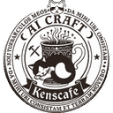

6面のディスプレイと機体システムの配置図が何を示しているか、異常の検知から AI の提案、パイロットの承認までを、実際の画面で案内します。ナレーションは日本語、字幕は日本語と英語の併記です。A walk through the real screen: what the six displays and the system layout show, from detecting a fault to the AI proposal and the pilot's approval. English screen, English narration and English captions.
※ 架空の便と模擬データによるデモです。動画は tools/tour/make.py でデモ画面から自動で作っています。Note: fictional flights and simulated data. The video is generated from the demo screen by tools/tour/make.py. 使い方を見るHow to use (Japanese)